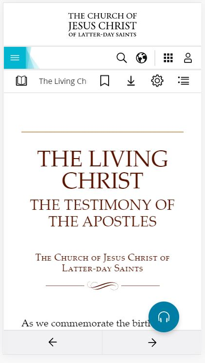

White Space and Clean Design
churchofjesuschrist.org
This is the best example of using white space and clean design, white background with dark saturated color text give the best look the page and makes it pleasing to the eye and there is plenty of room to rest your eyes.